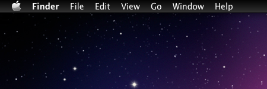
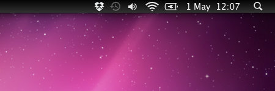

 
|
|
MenuBarFilter.zip |
You can download this project in either zip or tar formats.
You can also clone the project with Git by running:
$ git clone git://github.com/eece/MenuBarFilter
Inspiration:
http://rsms.me/2011/02/06/osx-menubar-should-be-dark.html
Most of the code is from Blacktree Nocturne
http://code.google.com/p/blacktree-nocturne/
Application icon is from Iconsmaster
http://www.iconsmaster.com/